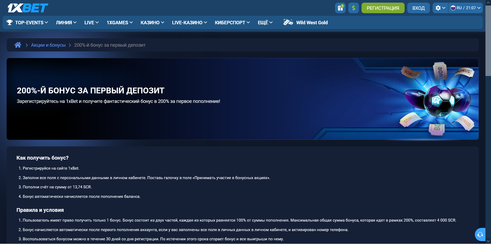

Как проверить вывод бонусных средств 1xBet
Как вывести бонусы с 1xBet: полностью выполнить условия отыгрыша конкретной акции, дождаться расчёта всех ставок и проверить, какая сумма перешла на основной счёт. В правилах первого депозита, снятых 3 октября 2026 года в версии сайта с валютой SCR, отыгранный бонус переводится в размере остатка, но не более начисленной суммы.
Четыре состояния бонусных средств
Бонусы 1xBet проходят несколько состояний, и одного факта начисления недостаточно для вывода. Отображаемое в аккаунте 1xBet начисление, прогресс отыгрыша, завершение условий и доступный остаток — разные признаки. Переходы между ними определяет акция 1xBet, которую вы активировали.
| Что видно | Что это может означать | Что сверить |
|---|---|---|
| Начисление отображается | Акция активирована или сумма зачислена. | Правила участия, срок и источник средств. |
| Прогресс меняется | Часть ставок засчитывается в оборот. | Базу расчёта и зачётные ставки. |
| Прогресс завершён | Требование по обороту может быть выполнено. | Расчёт всех ставок и итоговый статус акции. |
| Сумма доступна к выводу | Можно проверить возможность создания заявки. | Баланс, ограничения счёта и платёжный метод. |
Разные акции 1xBet переводят средства между состояниями по своим правилам, поэтому ни один этап не следует считать автоматическим. Если вы не видите начисление, начните с проверки бонусного счёта.
Как вывести бонусы с 1xBet по правилам первого депозита
Вывод бонуса 1xBet описан прямо в правилах акции «200% за первый депозит». Страница открыта 3 октября 2026 года без входа в аккаунт; в сессии были выбраны Сейшелы и валюта SCR, поэтому для рублёвого счёта из Москвы пункты ниже служат образцом формулировок, а не подтверждённым предложением.

| Пункт | Что указано в правилах | Что это значит для вывода |
|---|---|---|
| Условие вывода | Перед выводом начисление должно быть полностью отыграно, иначе бонусы и выигрыши с них аннулируются. | Заявка до завершения отыгрыша рискует обнулить результат акции. |
| Момент зачёта | Отыгранная сумма засчитывается после расчёта всех ставок в рамках отыгрыша. | Один нерассчитанный купон задерживает перевод. |
| Перевод | Отыгранный бонус переводится на основной счёт в размере остатка бонусных средств, но не более суммы бонуса. | Переведённая сумма может быть меньше остатка. |
| Малый остаток | Остаток меньше минимальной ставки — бонус считается проигранным. | Перевода не будет. |
| Срок | 30 дней со дня регистрации; затем сгорают бонус и все выигрыши по нему. | Срок считается не от пополнения. |
| Отказ | Возможен, если остаток на счёте больше размера полученного бонуса; выигрыши и бонус теряются. | Отдельный путь к выводу депозита. |
| KYC | При запросе документов и их непредоставлении бонус и выигрыш аннулируются. | Проверка личности может предшествовать выводу. |
Бонусы в разделе 6.3 общих правил на ту же дату описаны короче, без пункта о лимите перевода. Для расчёта суммы опирайтесь на страницу конкретной акции и сохраняйте её копию с датой: по разделу 6.3 участие в акции означает принятие последней версии условий.
Сколько бонуса переведут на основной счёт: пример лимита
Лимит перевода бонуса 1xBet удобно проверить на условных числах. Пример построен на формулировке со снимка: перевод равен остатку бонусных средств, но не больше суммы бонуса. Валюта SCR взята из той же версии правил, суммы вымышлены.
| Остаток на бонусном счёте | Перевод на основной счёт по тексту правил | Что уточнить |
|---|---|---|
| 350 SCR | 200 SCR | Судьбу 150 SCR сверх лимита правило не описывает — спросите поддержку письменно. |
| 200 SCR | 200 SCR | Совпадение остатка и лимита. |
| 120 SCR | 120 SCR | Переводится весь остаток. |
| Меньше минимальной ставки | 0 | Бонус считается проигранным. |
| 6 500 SCR при бонусе 4 000 SCR (максимум акции) | 4 000 SCR | Тот же лимит при максимальном начислении. |
Бонус на 200 SCR в примере не превращается в 350 SCR на основном счёте, даже если отыгрыш прошёл удачно: переводится 200 из 350 SCR, то есть около 57% остатка. Перед расчётом ожидаемой суммы найдите в своей версии правил пункт о переводе и сверьте его с историей операций.
Отказ от бонуса: когда можно вывести депозит
Отказ от бонуса 1xBet в правилах первого депозита со снимка допускается в процессе выполнения условий, если остаток средств на счёте больше полученного начисления. Тогда, по тексту правил, можно вывести остаток общей суммы всех депозитов, потеряв выигрыши и начисление.
Депозит 100 SCR, начисление 200 SCR. При остатке 260 SCR условие выполнено (260 > 200), и отказ возможен; при остатке 150 SCR — нет. Сколько именно выплатят после отказа, уточните у поддержки до подтверждения: формулировка о «остатке общей суммы депозитов» допускает разное прочтение.
Бонус после отказа не восстанавливается, а выигрыши по нему теряются. Сравните две суммы: сколько вы получите при завершении отыгрыша с учётом лимита и сколько — при отказе. Ответственная игра в 1xBet означает не пополнять счёт ради ускорения отыгрыша: начисление не уменьшает риск проигрыша собственных денег.
Что проверить после отыгрыша
Завершение отыгрыша в 1xBet проверяют сравнением условия по обороту с фактическим прогрессом: какие ставки зачтены, когда они рассчитаны и не истёк ли срок. Нулевой счётчик сам по себе ещё не раскрывает, какая сумма перейдёт на основной баланс.
- Сохраните название и действовавшую версию правил акции.
- Зафиксируйте время и статус последней зачётной ставки.
- Убедитесь, что не осталось нерассчитанных купонов.
- Проверьте отдельно общую сумму и сумму, указанную как доступная для вывода.
Арифметика оборота разобрана в инструкции по отыгрышу. Не делайте дополнительные ставки только потому, что интерфейс не показал ожидаемый перевод средств: сначала выясните правило.
Нужна ли кнопка перевода на основной счёт
Перевод в правилах первого депозита 1xBet описан пассивно: отыгранный бонус «переводится на основной счет». Отдельное действие пользователя в тексте не упомянуто, а текущий интерфейс мы не проверяли, поэтому не называем кнопку, которую нельзя подтвердить.
Подарки по разделу 6.3 общих правил устроены иначе: средства подарка после выполнения требований по отыгрышу зачисляются на баланс в течение 24 часов, если не указано иное. Пока подарок активен, ставки с основного баланса не прекращают его действие.
Какое событие переводит результат акции в доступный баланс и с каким лимитом? Если в правилах этого нет, запросите у поддержки ссылку на применимый пункт и сохраните ответ.
Перед заявкой на вывод: общие правила счёта
Бонусные средства после перевода выводятся по общим правилам счёта. Раздел 6.2 на снимке 3 октября 2026 года содержит пункты, которые стоит сверить до заявки.
| Пункт | Формулировка правил |
|---|---|
| Оборот против депозитов | В выводе могут отказать, если сумма ставок не соответствует внесённым средствам; учитываются ставки с коэффициентом не менее 1.1. |
| Реквизиты | Вывод — только на реквизиты пополнения; при нескольких способах — пропорционально пополнениям. |
| Срок обработки | До 7 рабочих дней в зависимости от способа оплаты. |
| Документы | Запрошенные документы — в срок не более 1 месяца. |
| Проверка платежей | По условиям некоторых платёжных систем — до 180 дней. |
Задержка уже созданной заявки — тема диагностики выплаты, а запрос документов — верификации аккаунта.
Бонус отыгран, но вывести средства нельзя
Вывод бонуса начинается с вопроса, создана ли заявка на выплату. Если кнопка недоступна или сумма не входит в доступный баланс, проверяйте статус акции и ограничения счёта; если заявка уже создана, дальнейший путь относится к платёжной операции.
| Ситуация | Следующая проверка |
|---|---|
| Прогресс не завершён | Зачётные ставки, срок и арифметика оборота. |
| Прогресс завершён, баланс не изменился | Нерассчитанные купоны, правило о переводе и история операций. |
| Переведено меньше остатка | Лимит перевода начисленной суммой. |
| Баланс доступен, заявку создать нельзя | Ограничения аккаунта и запрос документов. |
| Заявка создана, денег нет | Статус заявки и способ оплаты. |
Обращение в поддержку 1xBet стоит сопроводить названием акции, датой выполнения условия, скриншотами статусов и ID заявки, если она есть. Не раскрывайте пароль и одноразовые коды.
Частые вопросы о выводе бонуса
Можно ли снять бонусное начисление напрямую?
Бонус за первый депозит по правилам со снимка нельзя вывести до полного отыгрыша: иначе начисление и выигрыши аннулируются. Номинал начисления и доступный к выводу результат — разные суммы.
Почему на основной счёт перевели меньше, чем было на бонусном?
Бонус в версии правил со снимка переводится в размере остатка, но не более начисленной суммы. Остаток сверх этой суммы правило не описывает — уточните его письменно.
Что делать, если срок отыгрыша закончился?
Срок бонуса в правилах первого депозита со снимка — 30 дней со дня регистрации, после чего начисление и выигрыши сгорают. Для другой акции откройте версию правил, действовавшую при участии.
Выигрыш с фрибета выводится так же?
Фрибет имеет отдельный порядок расчёта номинала и выигрыша. Сначала проверьте правила бесплатной ставки.
Источники и ограничения
Правила акции 1xBet «200% за первый депозит» и разделы 6.2–6.3 общих правил открыты 3 октября 2026 года на указанном зеркале в версии с Сейшелами и SCR; постоянство домена и применимость к Москве не подтверждены. Структура материала составлена по семантике и выдаче от 2 октября 2026 года. Суммы в примерах условные. ФНС указывала на отсутствие у 1xBet российской букмекерской лицензии — правовой контекст: сообщение ФНС.